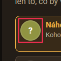
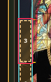
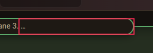
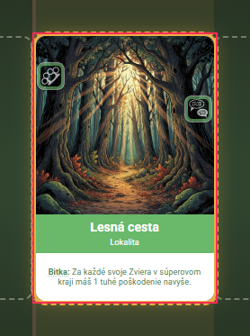
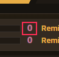
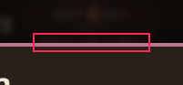
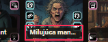
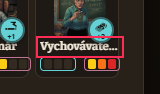
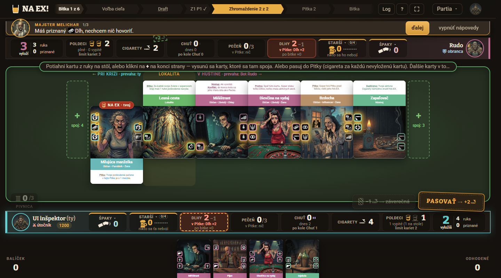
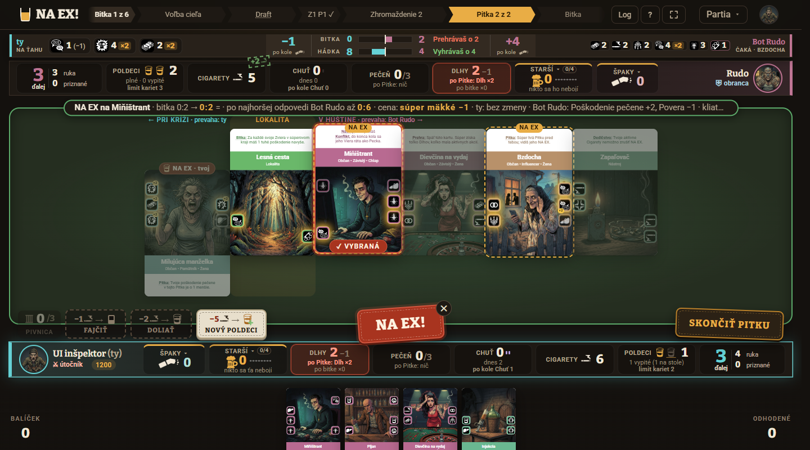

Overené nálezy: 10 — vysoká 0, stredná 4, nízka 6. Typy: nizky-kontrast, maly-ciel, skrateny-text, bez-fokusu, varovanie-konzola, prekryty-text.
Vyradené ako zámer alebo falošný poplach: 68 skupín nálezov (približne 1 190 hrubých nálezov nástroja): skryté karty lupy a línia pod nástenkou (prekryty-text / prekryty-prvok / prekryty-obsah), schodovitá línia (nezarovnany-rad), karty ruky vykúkajúce spod okna (orezany-text kl-tagy / kl-nazov), pokyn v pilulke skrátený trojbodkou, ktorý sa rozbalí pod myšou, odznaky jbar (maly-ciel — nie sú klikacie), nezarovnané avatary v nástenke (stred sedí), oddeľovač „·“ v pokyne, ✕ na pečati NA EX. Akceptované výnimky z vynimky.json: 14 – 62 nálezov na jeden stav.
Nič nebránilo hre: žiadna chyba v konzole okrem varovania UI-9, žiadny rozbitý obrázok; kostra (kostra.ts, len /hra, 1920/1440/1366) drží.
Zmerané fázy: lobby, výber cieľa (aj s vybranou lokalitou), stavba šenku, branie zo šenku, Zhromaždenie (prázdne, s „+“ na výber karty, s kartami v línii), Pitka, Pitka s vybranou kartou na NA EX a s položeným NA EX, krok rozdeľovania reči (hádka), koniec hry (kolo 6, výhra strachom), vrstvy Log, skratky „?“ a rozpis bodov (dlaždica Špaky).
Nezmerané: výsledok bitky (toast účtu bitky) — zobrazuje sa krátko a pri meraní bol už preč; pokus o zajatie (nenastal); Soundboard Melichar (tlačidlo sa v hlavičke AI účtu neukázalo); Šenok a Lokality ako samostatné vrstvy (šenok je na stole v drafte, lokality = nástenka vo výbere cieľa — merané v týchto stavoch). Vrstvy Log, „?“ a Špaky len v 1920, 1512, 1366. Výber karty v Zhromaždení ťahom myšou sa nedal vykonať (nástroj klikne len click), preto len cez „+“.
Filter: typ závažnosť stránka
nizky-kontrastIniciála „?“ v avatare vybraného bota v lobby má kontrast 3,23 : 1 (16 px, treba 4,5 : 1). Platí vo všetkých piatich rozlíšeniach.
Zdroj: apps/web/src/hra/hra.css:2081 (.bot-volba .avatar), apps/web/src/styles.css:310 (.avatar-inicialy, color #fff)
Návrh: Pre avatar vybranej voľby dať farbu textu s kontrastom aspoň 4,5 : 1 voči jeho podkladu (tmavý text na akcente alebo tmavší podklad).

maly-cielSegmenty teplomera reči (tlačidlá stupňa 1 / 2 / 3 pri každom staršom) majú pri 1512, 1440 a 1366 šírku 23 px (výška 83 px), pod hranicou 24 px (WCAG 2.5.8). Je to hlavný ovládací prvok kroku „Hádka → tvoje reči“.
Zdroj: apps/web/src/hra/teplomery.css:172 (.r3-seg, šírka z flex v .r3-pas)
Návrh: Dať .r3-seg min-width: 24px (alebo zväčšiť šírku pásu .r3-pas o 1–2 px) pri šírke okna do 1512 px.

skrateny-textV pokyne Pitky je za dlhým textom odkaz „Ďalšie Pitky tejto bitky bez NA EX“ (auto-hotovo-odkaz). V základnom stave ho skracuje trojbodka a vidno ho až po najazdení myšou alebo fokuse na pokyn; hráč nevie, že taký ovládač existuje (presah 18 px). Samotné skracovanie pokynu je zámer (rozbalí sa pod myšou), skrytý je len ovládací prvok.
Zdroj: apps/web/src/hra/hra.css:6477 (.linia-stav > .pilulka-text, ellipsis) a apps/web/src/hra/HernaPlocha.tsx:4420 (button.auto-hotovo-odkaz)
Návrh: Odkaz vyniesť z pokynu na samostatné miesto (napr. vedľa tlačidla Skončiť Pitku), alebo ho dať na začiatok pokynu pred dlhý text.

bez-fokusuKarta lokality (Lesná cesta) po výbere cieľa pri fokuse z klávesnice nijako nezmení vzhľad. Nástroj to zistil raz pri 1920×1080; na ostatných rozlíšeniach som tento stav nemeral.
Zdroj: apps/web/src/hra/HernaPlocha.tsx:5107-5122 (.volba-ciela-karty, kl-klik) a hra.css (chýba :focus-visible pre kartu lokality)
Návrh: Pridať karte lokality viditeľný :focus-visible (obrys v akcente ako majú ostatné .s-lupou.naex-mozny).

nizky-kontrastČíslo súpera v tlačidle odhadu bitky (button.jbar-odhad) má kontrast 4,14 : 1 (písmo 14 px, pri .vedie 17 px; treba 4,5 : 1). Vo všetkých rozlíšeniach a fázach.
Zdroj: apps/web/src/hra/jbar.css:355 (.jk-cislo.su, farba var(--su) = #e0805f, apps/web/src/schemy.css:39)
Návrh: Pre .jk-cislo.su použiť svetlejší odtieň farby súpera (mix s bielou ~12 %) alebo stmaviť podklad lišty.

skrateny-textVýhľad Absťáka v dlaždici Chuť sa skracuje trojbodkou: pri 1366 „chýba 2 · inak +1 Ab…“ (obsah 123 px, box 112 px), pri 1440 o 2 px. Dôležité varovanie bez nápovedy; ďalej „+2 po výhre“ pod dlaždicou Starší (3 px výškový presah).
Zdroj: apps/web/src/hra/hra.css:4261-4268 (.doska .zdroj .zdroj-pod > *, nowrap + ellipsis) a hra.css:716 (.abstak-vyhlad)
Návrh: Skrátiť text („chýba 2 · +1 Absťák“) alebo povoliť zalomenie na dva riadky ako pri .zdroj-pod > :only-child (hra.css:4272); doplniť title s celým textom.

skrateny-textPri 1366×650 sú v ruke názvy „Milujúca manželka“ a „Dievčina na vydaj“ skrátené trojbodkou (92 px obsah v 78 px). Karta sa pri najazdení vysunie a ukáže celý názov, preto len nízka.
Zdroj: apps/web/src/hra/hra.css:1553-1570 (.ruka-meno, nowrap + ellipsis, šírka karty − 6 px)
Návrh: Zmenšiť písmo .ruka-meno na malých oknách (0,56 rem) alebo dať title s celým názvom.

skrateny-textMeno staršieho „Vychovávateľka“ je v okne konca hry skrátené trojbodkou („Vychovávate…“, 85 px v 80 px).
Zdroj: apps/web/src/hra/priazen-kola.css:821 (.pas-st-meno, nowrap + ellipsis)
Návrh: Zmenšiť .pas-st-meno na 0,68 rem alebo rozšíriť stĺpec o 6 px.

varovanie-konzolaKonzola hlási „Melichar: veta sa do baru nezmestí ani sama — text treba skrátiť“ pre tri hlášky: „dlh“ („Prvý Dlh! Úprimne, nečudujem sa…“), „exekutor“ („Máš priznaný Dlh, nechcem nič hovoriť. V každej bitke príde Exekútor…“) a „body“ („Špaky v bare rozhodnú…“). Na snímke som orezanie nevidel (bar delí text na strany 1/3, 1/5), preto nízka.
Zdroj: apps/web/src/hra/MelicharBar.tsx:196 (console.warn); text hlášok v packages/core/data/vyucba/napovedy.json:104 (dlh), :142 (body), :272 (exekutor)
Návrh: Skrátiť tri vety v napovedy.json na dĺžku, ktorá sa zmestí do jednej strany baru pri 1440 px, alebo ich rozdeliť na kratšie vety.

prekryty-textPri 1440×800 sa vybraná karta (Miňištrant) v Pitke vysunie o ~10 px a štítok „NA EX“ nad ňou prekryje prvý riadok textu efektu („Nástup: Ak vyvoláš…“ je vidno len ako „Na…“). Nástroj to neoznačil, vidno na snímke; text karty je čitateľný v lupe, preto nízka.
Zdroj: apps/web/src/hra/hra.css:3595 (.naex-nad) a štýl vybranej / vysunutej karty (.kl-vybrana)
Návrh: Pri vybranej karte posunúť štítok .naex-nad o výšku vysunutia vyššie, alebo mu dať vonkajší okraj nad kartu.

Žiadne vysoké závažnosti. Bez nálezov: stavba šenku, branie zo šenku, Zhromaždenie a línia kariet, vrstvy Log, „?“ a Špaky, výber lokality (okrem UI-4), Pitka (okrem UI-3, UI-5, UI-10), koniec hry (okrem UI-8).